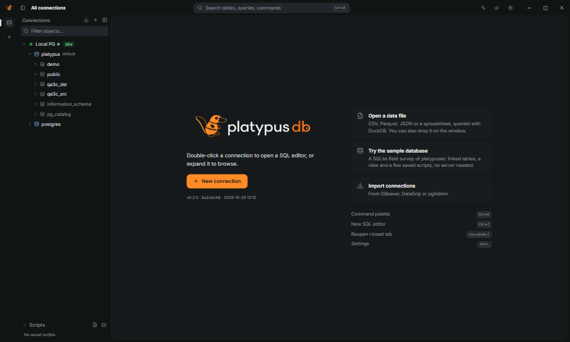
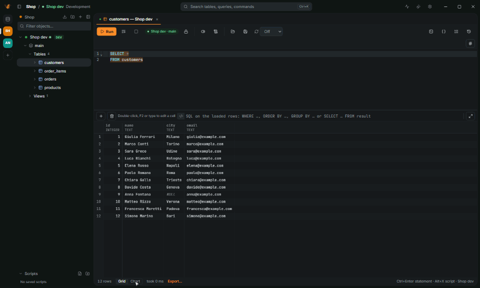
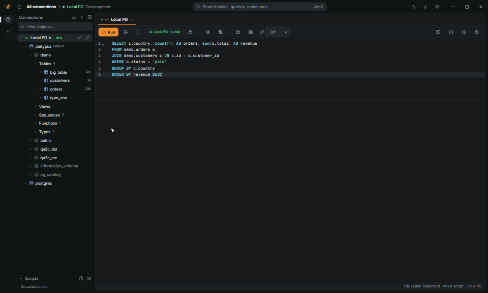
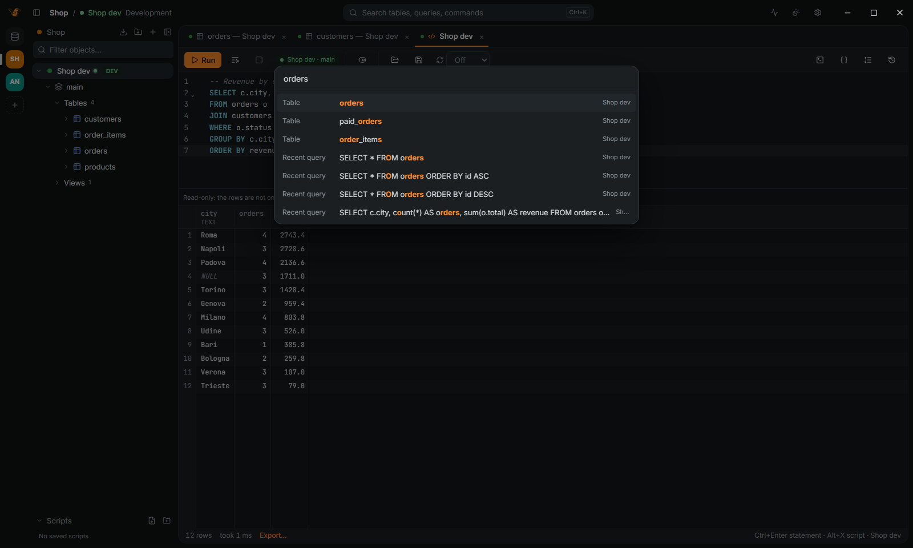

7 rows · took 1 ms
Sorry, Instagram.The query's done.
PlatypusDB opens in 0.7 seconds, weighs 20 MiB and talks to twenty databases. No time left to check your phone. Free and open source, no account.
PlatypusDB





01 · SQL editor
It writes the JOIN.You take the credit.
Autocomplete that has read your schema: the foreign key, the alias and the ON, before you finish typing the table name.
- A linter that nags, politelyUnknown columns, joins without a condition,
SELECT * on production.
- Charts from any resultBars, lines, scatter and pie, one click from the grid.
02 · Result grid
A million rows.Zero spinners.
The first page of a million SQLite rows in 0.3 seconds. Scroll, sort from the header, filter. Your scroll wheel gives up first.
- Export anythingCSV, JSON, Parquet, Excel, SQL
INSERT, Markdown and more.
03 · Data editor
Edit production.Sleep at night.
Change cells, add rows, read the SQL before it is saved. Production gets a red PROD badge and opens in manual commit.
- Read-only means read-onlyOnly statements that read get through.
- Lost your
WHERE?The app asks before that change reaches production.
04 · Query plans
The slow partis the red one.
Explain analyze as a tree or a graph, each step tinted by its share of the time, with an index suggestion. Then it rolls back.
05 · Command palette
Your mouse isnow optional.
Tables, scripts, connections and every command, one Ctrl+K away. Vim mode too, if you are that kind of person.
Every feature, area by area →
Small on disk.
Loud about it.